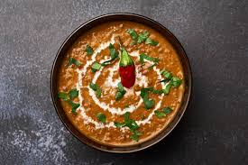

Back to homepage
Dal Makhani

Lentils are simmered in a spicy tomato sauce and finished with a little cream.
Ingredients
- 1 cup lentils
- 1/4 cup dry kidney beans (Optional)
- water to cover
- 5 cups of water
- salt to taste
- 2 tablespoons vegetable oil
- 1 tablespoon cumin seeds
- 4 cardamom pods
- 1 cinnamon stick, broken
- 4 bay leaves
- 6 whole cloves
- 1 1/2 tablespoons ginger paste
- 1 1/2 tablespoons garlic paste
- 1/2 teaspoon ground turmeric
- 1 pinch cayenne pepper, or more to taste
- 1 cup canned tomato puree, or more to taste
- 1 tablespoon chili powder
- 2 tablespoons ground coriander
- 1/4 cup butter
- 2 tablespoons dried fenugreek leaves (Optional)
- 1/2 cup cream (Optional)